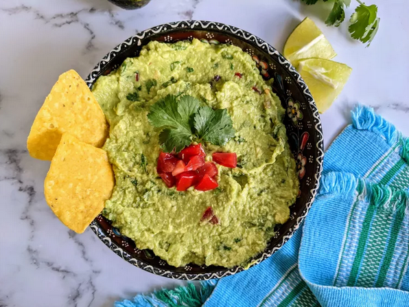

Guacamole

What Is Guacamole?
Guacamole is an avocado-based dip or psread that originated in Mexico. It's tipically made with mashed avocado and lime juice, then seasoned with salt and cilantro. Guacamole often contains tomatoes and onions.
Guacamole Ingredients
These are the basic ingredients for the recipe.
- Avocados: Of course, you'll need avocados!
- Lime: Lime juice adds brightness and slows down the browning brocess
- Salt: A teaspoon of salt enhances the flavors of the other ingredients.
- Vegetables: You'll also need an onion and roma tomatoes.
- Herbs and spices: Fresh cilantro, minced garlic, and cayene pepper add tons of flavor.
Ingredients
- 3 avocados - peeled, pitted, and mashed
- 1 lime, juiced
- 1 teaspoon salt
- 2 roma (plum) tomatoes, diced
- 1⁄2 cup diced onion
- 3 tablespoons chopped fresh cilantro
- 1 teaspoon minced garlic
- 1 pinch ground cayenne pepper (Optional)
Steps
- Mash avocados, lime juice, and salt together in a medium bowl; mix in tomatoes, onion, cilantro, and garlic. Stir in cayenne pepper.
- Serve immediately, or cover and refrigerate for 1 hour for improved flavor.